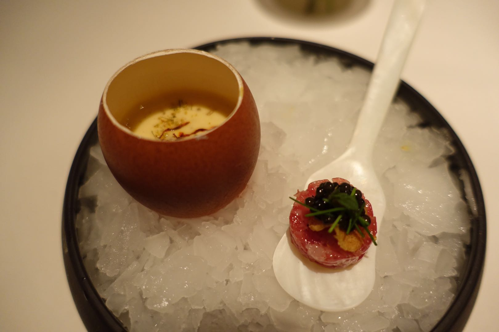
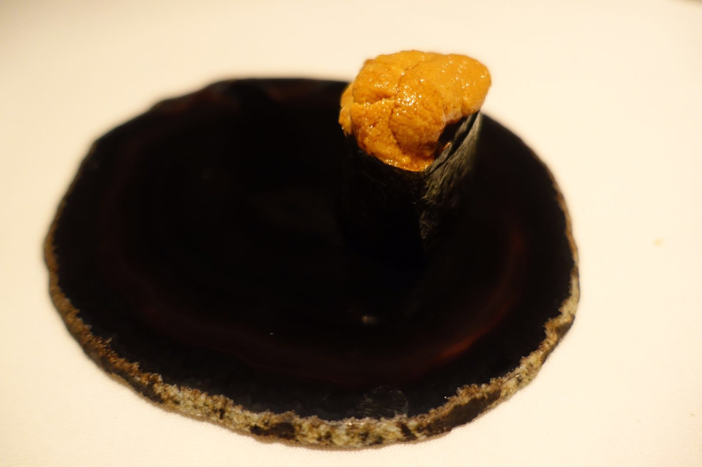
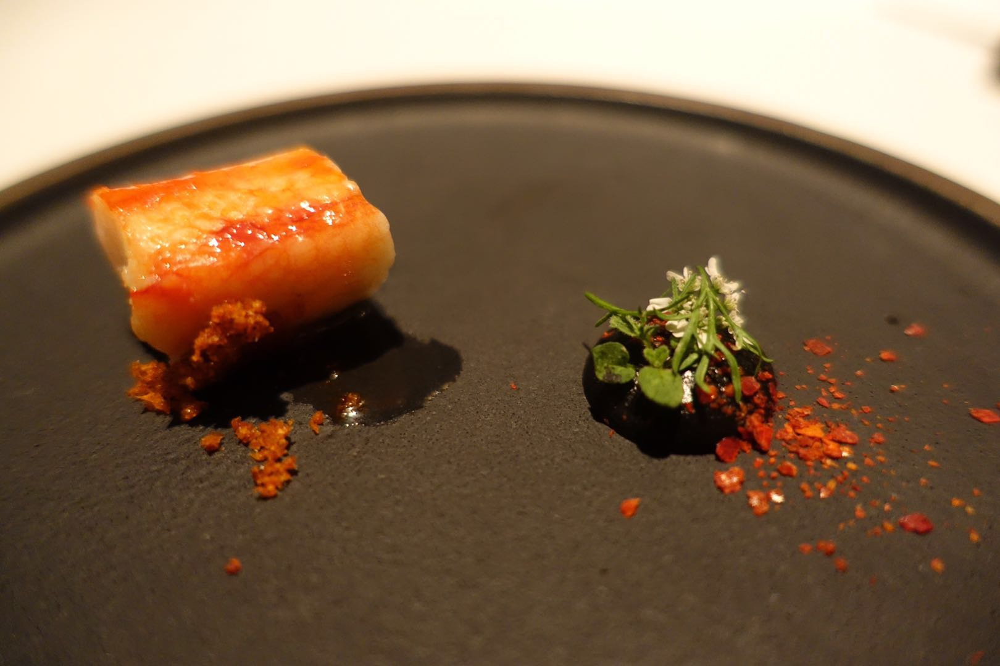
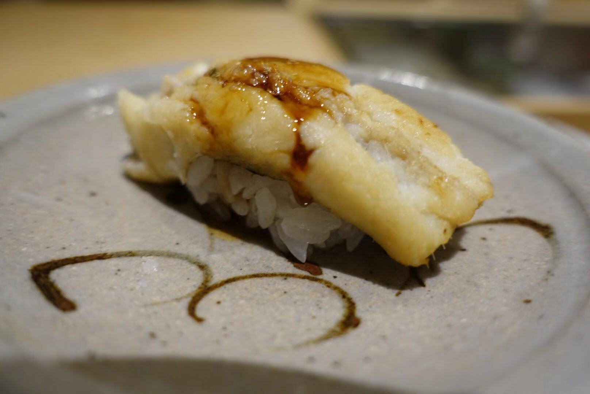
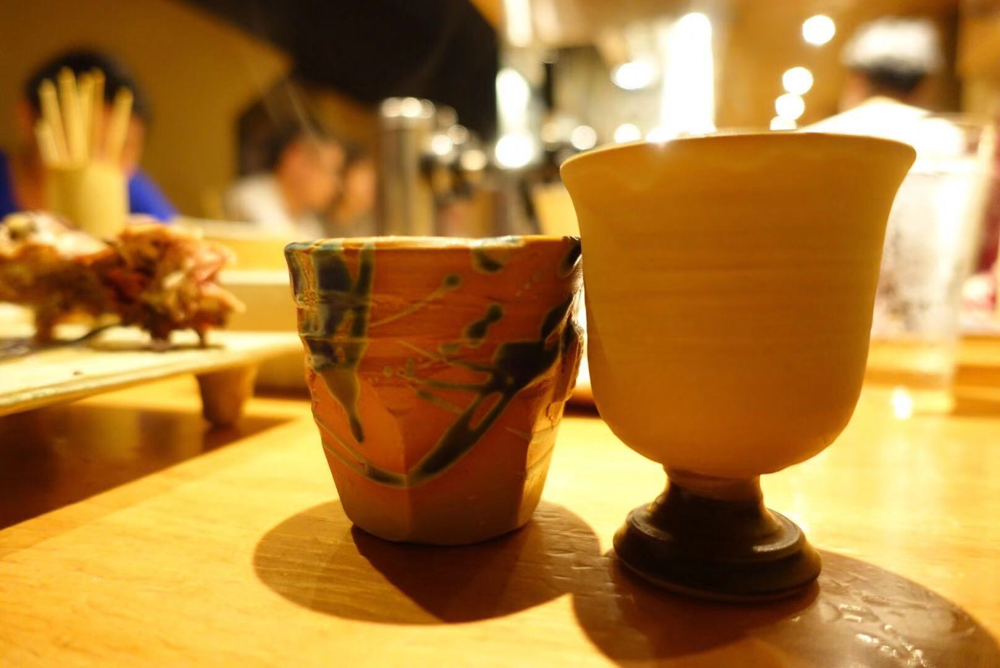
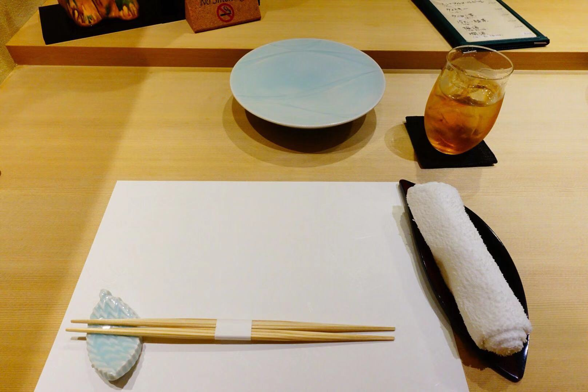
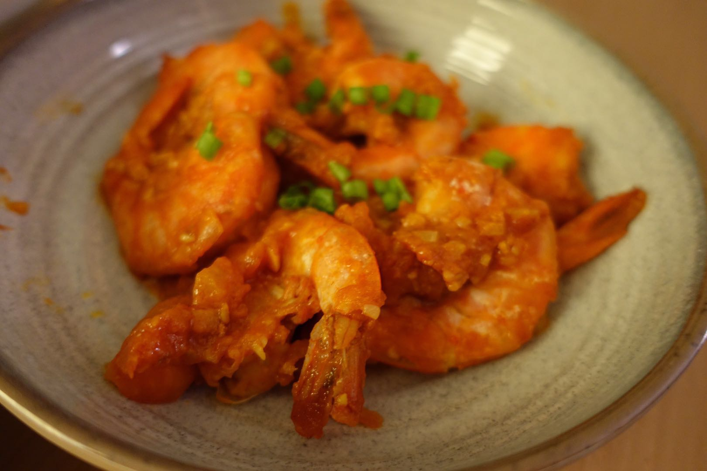
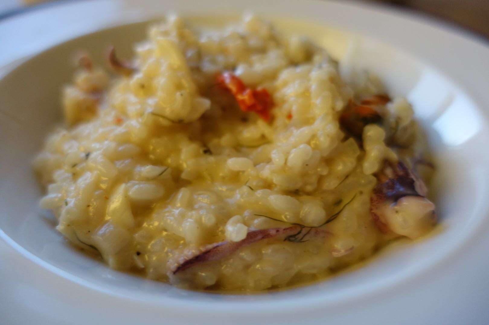

My Foodie Art in the Wild!
Oriole @2017
Oriole is a restaurant hidden down an alley-like street in Chicago’s West Loop neighborhood, offering an extended tasting menu presented by Executive Chef & Owner Noah Sandoval.
  Japanese Cusine @2017
Emphasis is placed on seasonality of food or shun, and dishes are designed to herald the arrival of the four seasons or calendar months.
  Home Made @2018
Check it out! The following are all home made cuisine!
 